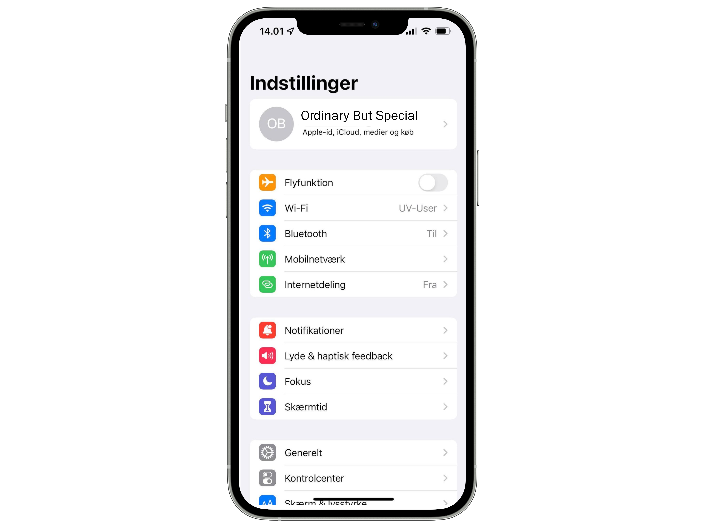
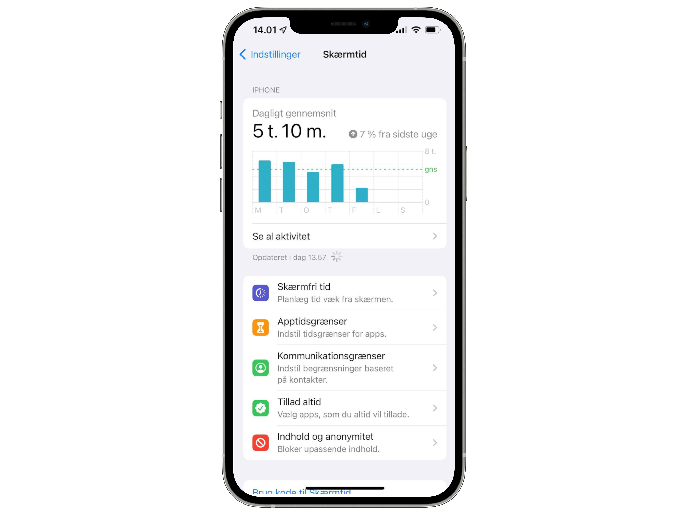
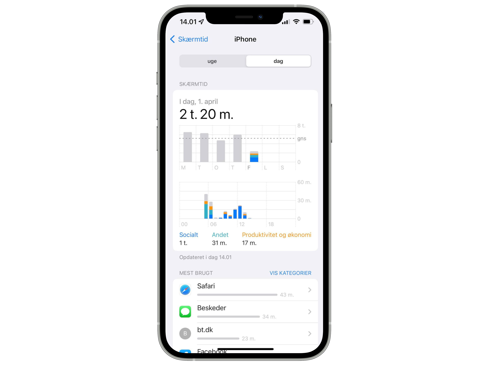

1 / 5
Lås din Apple mobil op.
2 / 5
Åben appen Indstillinger eller Settings.
3 / 5

Under indstillinger, vælg skærmtid.
4 / 5

Under skærmtid kan du trykke på "Se al aktivitet" for at se statestik over forbrug på de forskellige apps.
5 / 5

Under "Se al aktivitet" kan du se din daglige eller ugentlige statestik.
❮
❯